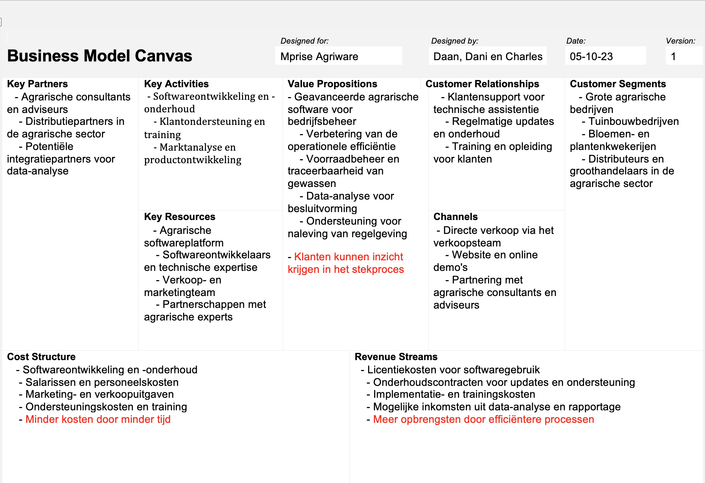
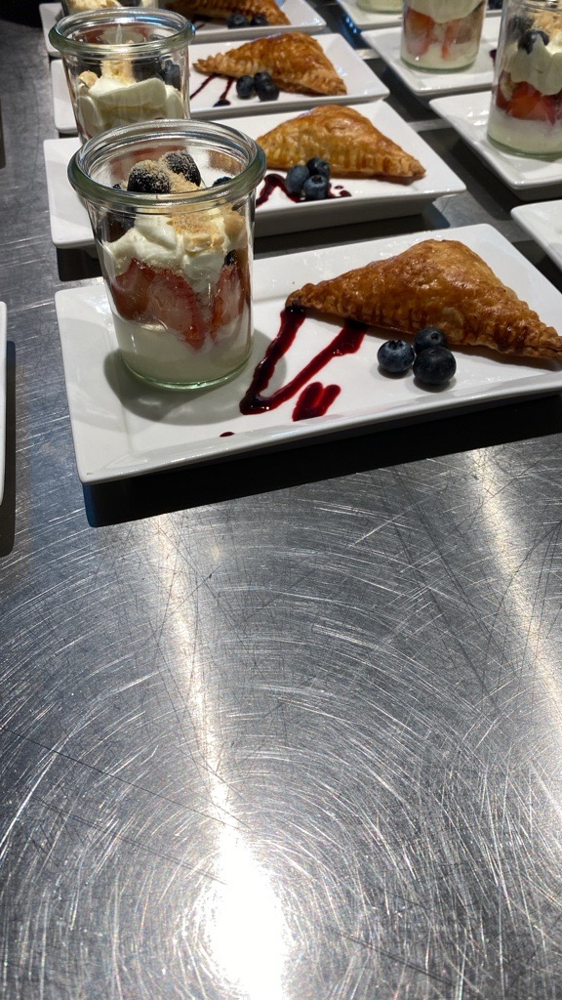
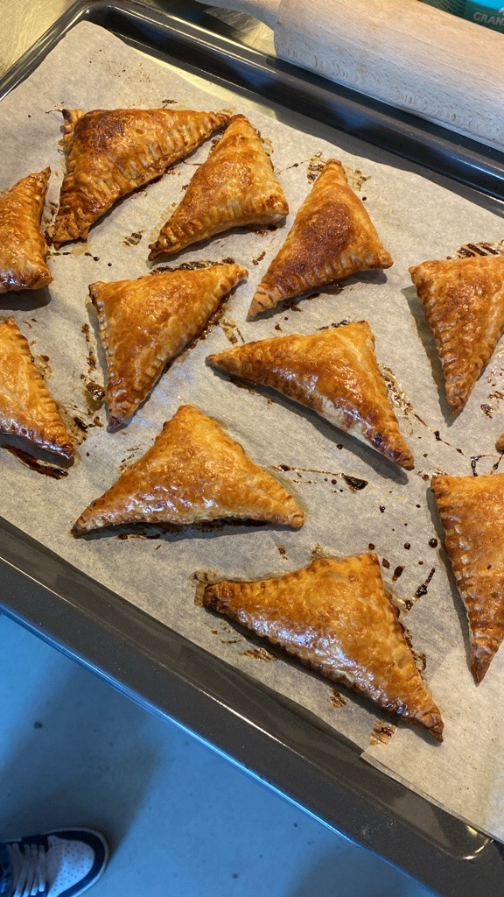
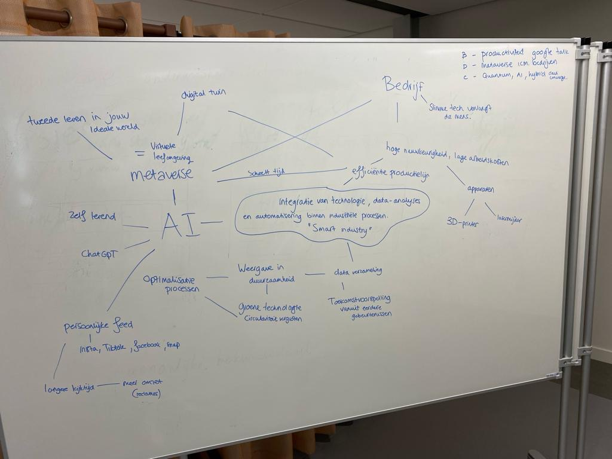
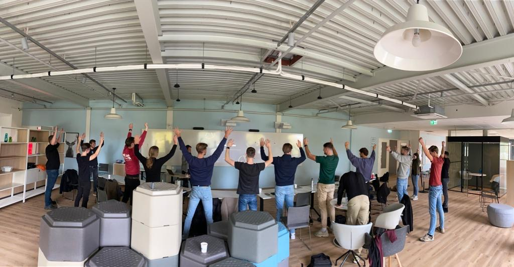
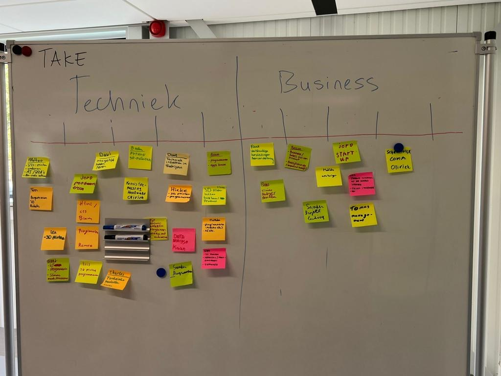

Op deze pagina zijn verschillende foto's te zien die tijdens de Business workshops gemaakt zijn. Geniet van de fotodump!

Hierboven is het BMC-model te zien voor het bedrijf Mprise Agriware.
Hierboven hadden wij dit gemaakt tijdens de kookles
De kookles was trouwens de leukste Business les, vonden wij alle 3!
  